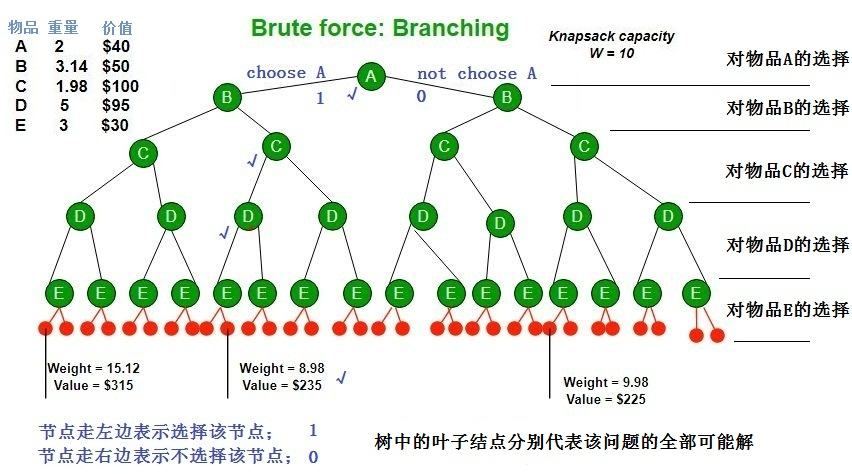
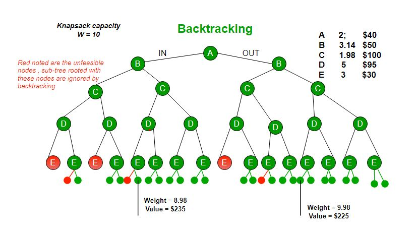

0/1 Knapsack using Branch and Bound
0
Branch and bound is an algorithm design paradigm which is generally used for solving combinatorial optimization problems. These problems typically exponential in terms of time complexity and may require exploring all possible permutations in worst case. Branch and Bound solve these problems relatively quickly.
分枝定界是一种常用于求解组合优化问题的算法设计范式。这些问题的时间复杂度通常是指数级的，在最坏的情况下可能需要研究所有可能的排列。分支定界可以较快地解决这些问题。
Let us consider below 0/1 Knapsack problem to understand Branch and Bound.
下面让我们考虑0/1背包问题来理解分枝定界。
Given two integer arrays val[0…n-1] and wt[0…n-1] that represent values and weights associated with n items respectively. Find out the maximum value subset of val[] such that sum of the weights of this subset is smaller than or equal to Knapsack capacity W.
给定两个整数数组val[0…n-1]和wt[0…n-1]，分别表示与n个项相关联的值和权重。找出val[]的最大值子集，使该子集的权重之和小于或等于背包容量W。
Let us explore all approaches for this problem.
让我们探讨解决这个问题的所有方法。
1. A Greedy approach is to pick the items in decreasing order of value per unit weight. The Greedy approach works only for fractional knapsack problem and may not produce correct result for 0/1 knapsack.
1 一种贪婪的方法是按每单位重量值的降序选取项目。贪心方法只适用于分数背包问题，对于0/1背包问题可能无法得到正确的结果。
0/1背包问题：我们有一堆物品S={a1,a2,…,an}，每个物品ai都有一个重量wi和一个价值vi。现在有一个背包，这个背包的容量为W，现在要将这些物品在不超越背包容量的情况下选择性的放入背包，使得背包里面物品的价值最大，物品不能只选取其中一部份，必须选择全部，或不选！（放与不放到背包里，采用二进制表示，1表示放入背包，0表示不放入背包。）
分数背包问题：这个问题和上面的问题比较类似，唯一不同的就是该问题里面的物品可以进行分割，便可以只选取1个物品ai的一部份。
2. We can use Dynamic Programming (DP) for 0/1 Knapsack problem. In DP, we use a 2D table of size n * W. The DP Solution doesn’t work if item weights are not integers.
2 我们可以用动态规划（DP）求解0/1背包问题。在DP中，我们使用大小为n * w的2D表。如果项目权重不是整数，DP解决方案就不起作用。
3. Since DP solution doesn’t alway work, a solution is to use Brute Force. With n items, there are 2^n solutions to be generated, check each to see if they satisfy the constraint, save maximum solution that satisfies constraint. This solution can be expressed as tree.
3 由于DP解决方案并不总是有效的，一个解决方案是使用暴力。对于n个项目，将生成2^n个解，检查每个解是否满足约束，保存满足约束的最大解。这个解可以表示为树。

#include <iostream>
#include <algorithm>
#include <vector>
#include <cmath>
struct Item //物品定义
{
int id; //编号，重量，价值。编号为0的物品这里没有使用
double weight, value;
Item(){}
Item(int i, double w, double v) :id(i), weight(w), value(v){}
};
const int C=10; // C背包所能承受的最大重量
const int n=5; // 物品个数n
std::vector<Item> allItems; // 所有的物品
std::vector<Item> selectedItems; // 装入背包的物品
double maxValue=0; // 能够装入背包的最大价值
void Result(int solution) {
selectedItems.clear();
for(int i = 0; i < n; i++) {
if (solution & 1)
selectedItems.push_back(allItems[i]);
solution >>= 1;
}
}
int KnapsackProblem_BruteForce()
{
int allCase = static_cast<int>(pow(2, n));
maxValue = 0;
for (int i = 0; i < allCase; i++)
{
int currentCase = i;
double currentWeight = 0, currentValue = 0;
for (int j = 0; j < n ; j++) // 将所有二进制是1,所代表物品的重量和价值各自计算累加和
{
if (currentCase & 1) // 二进制位等于1，则物体放进背包，0不放
{
currentWeight += allItems[j].weight;
currentValue += allItems[j].value;
}
if (currentWeight > C) // 如果已经超重了就不需要继续加了
break;
currentCase = currentCase >>1; //计算完移除一个
}
if (currentWeight <= C && currentValue > maxValue)
{
maxValue = currentValue;
Result(i);
}
}
return maxValue;
}
int main()
{
allItems.push_back(Item(1, 2, 40));
allItems.push_back(Item(2, 3.14, 50));
allItems.push_back(Item(3, 1.98, 100));
allItems.push_back(Item(4, 5, 95));
allItems.push_back(Item(5, 3, 30));
KnapsackProblem_BruteForce();
for (size_t i = 0; i < selectedItems.size(); i++)
std::cout << "物品编号：" << selectedItems[i].id
<< " 重量：" << selectedItems[i].weight
<< " 价值：" << selectedItems[i].value << std::endl;
std::cout << "背包最大价值：" << maxValue;
while(1);
return 0;
}
/*
物品编号：1 重量：2 价值：40
物品编号：3 重量：1.98 价值：100
物品编号：4 重量：5 价值：95
背包最大价值：235
*/
We can use Backtracking to optimize the Brute Force solution. In the tree representation, we can do DFS of tree. If we reach a point where a solution no longer is feasible, there is no need to continue exploring. In the given example, backtracking would be much more effective if we had even more items or a smaller knapsack capacity.
我们可以使用回溯来优化暴力解决方案。在树表示中，我们可以做树的DFS。如果我们到了一个解决方案不再可行的地步，就没有必要继续探索。在给定的例子中，如果我们有更多的物品或更小的背包容量，回溯将更加有效。

The backtracking based solution works better than brute force by ignoring infeasible solutions. We can do better (than backtracking) if we know a bound on best possible solution subtree rooted with every node. If the best in subtree is worse than current best, we can simply ignore this node and its subtrees. So we compute bound (best solution) for every node and compare the bound with current best solution before exploring the node.
基于回溯的解决方案通过忽略不可行的解决方案比暴力解决方案效果更好。如果我们知道每个节点根上的最佳可能解子树的界，我们可以做得更好（比回溯）。如果子树中的最佳值比当前最佳值差，我们可以忽略此节点及其子树。因此，我们计算每个节点的边界（最佳解），并在探索节点之前将边界与当前最佳解进行比较。
void Backtracking()
{
If you are already at a solution, report success.
for ( every possible choice in the current position )
{
1 Make that choice and take one step along the path.
2 Use recursion to solve the problem from the new position.
3 If the recursive call succeeds, report the success to the next higher level.
4 If not, back out of the current choice to restore the previous state.
}
Report failure.
}
Example bounds used in below diagram are, A down can give $315, B down can $275, C down can $225, D down can $125 and E down can $30.
下图中使用的示例边界是，A向下可以给出315美元，B向下可以给出275美元，C向下可以给出225美元，D向下可以给出125美元，E向下可以给出30美元。

Branch and bound is very useful technique for searching a solution but in worst case, we need to fully calculate the entire tree. At best, we only need to fully calculate one path through the tree and prune the rest of it.
分枝定界是搜索解的一种非常有用的技术，但在最坏的情况下，我们需要完全计算整个树。充其量，我们只需要完全计算通过树的一条路径，然后修剪其余的路径。
Source:
资料来源：
01背包属于找最优解问题，用回溯法需要构造解的子集树。对于每一个物品i，对于该物品只有选与不选2个决策，总共有n个物品，可以顺序依次考虑每个物品，这样就形成了一棵解空间树：基本思想就是遍历这棵树，以枚举所有情况，最后进行判断，如果重量不超过背包容量，且价值最大的话，该方案就是最后的答案。
在搜索状态空间树时，只要左子节点是可一个可行结点，搜索就进入其左子树。对于右子树时，先计算上界函数，以判断是否将其减去（剪枝）。
上界函数bound()：当前价值cw+剩余容量可容纳的最大价值<=当前最优价值bestp。
为了更好地计算和运用上界函数剪枝，选择先将物品按照其单位重量价值从大到小排序，此后就按照顺序考虑各个物品。
利用回溯法试设计一个算法求出0-1背包问题的解，也就是求出一个解向量ｘi （即对n个物品放或不放的一种的方案）
其中， (ｘi = 0 或１，ｘi = 0表示物体ｉ不放入背包，ｘi ＝1表示把物体ｉ放入背包）。
在递归函数Backtrack中，当i>n时，算法搜索至叶子结点，得到一个新的物品装包方案。此时算法适时更新当前的最优价值。
当i<n时，当前扩展结点位于排列树的第（i-1）层，此时算法选择下一个要安排的物品，以深度优先方式递归的对相应的子树进行搜索，对不满足上界约束的结点，则剪去相应的子树。
回溯法求01背包问题：
① 用约束函数在扩展结点处剪除不满足约束的子树；
② 用限界函数剪去得不到问题解或最优解的子树。
#include <iostream>
#include <stdio.h>
using namespace std;
int n; //物品数量
double c; //背包容量
double v[100]; //各个物品的价值 value
double w[100]; //各个物品的重量 weight
double cw = 0.0;//当前背包重量 current weight
double cp = 0.0;//当前背包中物品总价值 current value
double bestp = 0.0; //当前最优价值best price
double perp[100]; //单位物品价值(排序后) per price
int order[100]; //物品编号
int put[100];//设置是否装入，为1的时候表示选择该组数据装入，为0的表示不选择该组数据
//按单位价值排序
void knapsack()
{
int i,j;
int temporder = 0;
double temp = 0.0;
for(i=1;i<=n;i++)
perp[i]=v[i]/w[i]; //计算单位价值（单位重量的物品价值）
for(i=1;i<=n-1;i++)
{
for(j=i+1;j<=n;j++)
if(perp[i]<perp[j]) //冒泡排序perp[],order[],sortv[],sortw[]
{
temp = perp[i]; //冒泡对perp[]排序
perp[i]=perp[j];
perp[j]=temp;
temporder=order[i]; //冒泡对order[]排序
order[i]=order[j];
order[j]=temporder;
temp = v[i]; //冒泡对v[]排序
v[i]=v[j];
v[j]=temp;
temp=w[i]; //冒泡对w[]排序
w[i]=w[j];
w[j]=temp;
}
}
}
void backtrack(int i) //回溯函数
{ //i用来指示到达的层数（第几步，从0开始），同时也指示当前选择玩了几个物品
double bound(int i);
if(i>n) //递归结束的判定条件
{
bestp = cp;
return;
}
//如若左子节点可行，则直接搜索左子树;
//对于右子树，先计算上界函数，以判断是否将其减去
if(cw+w[i]<=c)//将物品i放入背包,搜索左子树
{
cw+=w[i];//同步更新当前背包的重量
cp+=v[i];//同步更新当前背包的总价值
put[i]=1;
backtrack(i+1);//深度搜索进入下一层
cw-=w[i];//回溯复原
cp-=v[i];//回溯复原
}
if(bound(i+1)>bestp)//如若符合条件则搜索右子树
backtrack(i+1);
}
//计算上界函数，功能为剪枝
double bound(int i)
{ //判断当前背包的总价值cp＋剩余容量可容纳的最大价值<=当前最优价值
double leftw= c-cw; //剩余背包容量
double b = cp; //记录当前背包的总价值cp,最后求上界
//以物品单位重量价值递减次序装入物品
while(i<=n && w[i]<=leftw)
{
leftw-=w[i];
b+=v[i];
i++;
}
//装满背包
if(i<=n)
b+=v[i]/w[i]*leftw;
return b;//返回计算出的上界
}
int main()
{
int i;
printf("请输入物品的数量和背包的容量：");
scanf("%d %lf",&n,&c);
/*printf("请输入物品的重量和价值：\n");
for(i=1;i<=n;i++)
{
printf("第%d个物品的重量：",i);
scanf("%lf",&w[i]);
printf("第%d个物品的价值是：",i);
scanf("%lf",&v[i]);
order[i]=i;
}*/
printf("请依次输入%d个物品的重量:\n",n);
for(i=1;i<=n;i++){
scanf("%lf",&w[i]);
order[i]=i;
}
printf("请依次输入%d个物品的价值:\n",n);
for(i=1;i<=n;i++){
scanf("%lf",&v[i]);
}
knapsack();
backtrack(1);
printf("最优价值为：%lf\n",bestp);
printf("需要装入的物品编号是：");
for(i=1;i<=n;i++)
{
if(put[i]==1)
printf("%d ",order[i]);
}
while(1);
return 0;
}
/*
5
10
2
3.14
1.98
5
3
40
50
100
95
30
*/
/*
请输入物品的数量和背包的容量：5
10
请依次输入5个物品的重量:
2
3.14
1.98
5
3
请依次输入5个物品的价值:
40
50
100
95
30
最优价值为：235.000000
需要装入的物品编号是：3 1 4
*/